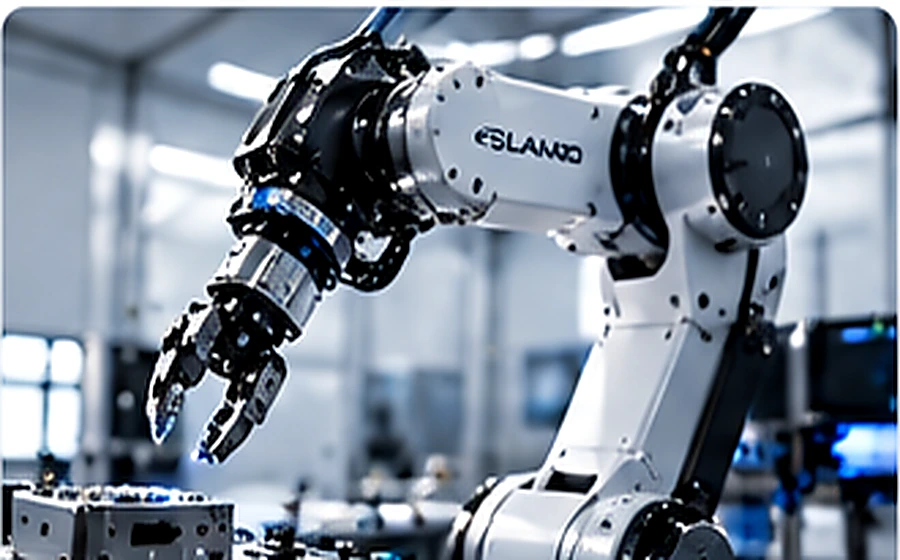
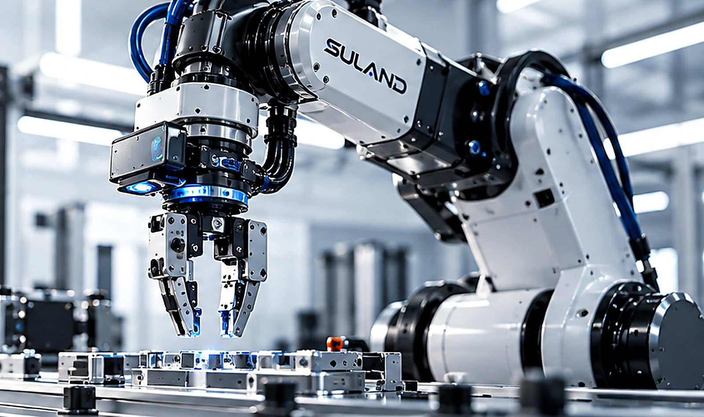
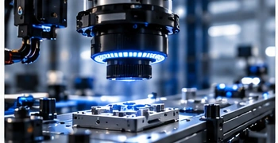
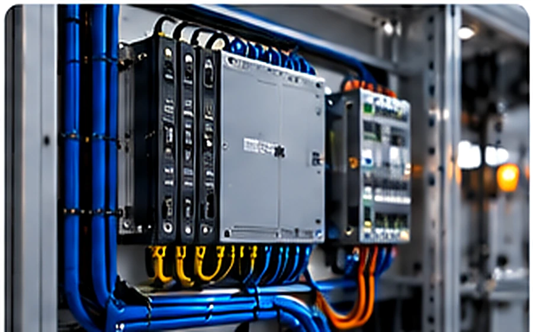
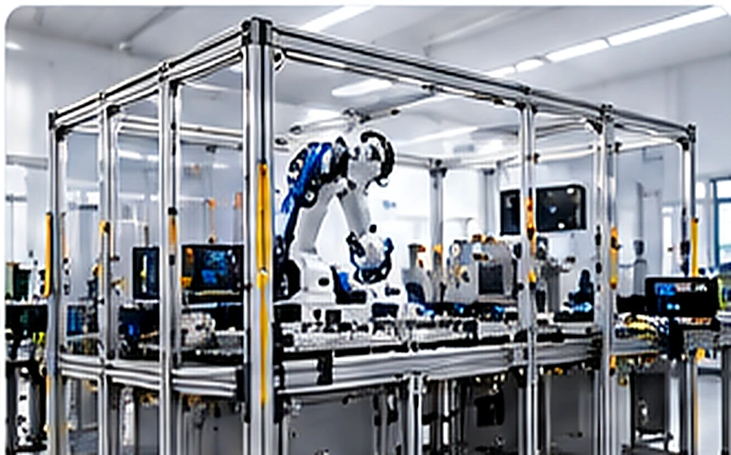

01 / MECHANICAL
Robotics Engineering
Mechanical design, CAD, robotic fixtures, custom mounts, brackets, enclosures, and prototype tooling for practical applications.
ROBOTICS & AI ENGINEERING PARTNER
SULAND partners with teams to design, develop, and integrate robotic systems—bringing together mechanical engineering, machine vision, controls, and intelligent automation.

YOUR ENGINEERING PARTNER
Robotics projects depend on the successful interaction of mechanical hardware, sensors, software, and control systems. We help teams develop these elements and address the interfaces between them.
Our support can be scoped to a specific engineering challenge or span multiple phases of development.
WHAT WE DO
Four disciplines. One integrated approach.

Mechanical design, CAD, robotic fixtures, custom mounts, brackets, enclosures, and prototype tooling for practical applications.

Camera and sensor integration, machine-vision workflows, and AI-enabled perception for inspection, detection, and robotic guidance.

Integration of motion, I/O, sensors, actuators, and control logic to coordinate robotic equipment and automated processes.

Connecting robotics, vision, controls, computing, and third-party equipment into cohesive systems, with testing and troubleshooting support.
HOW WE WORK
Engineering work organized around project needs, system interfaces, and validation.
Review requirements, constraints, existing hardware, and interfaces.
Design and prototype the mechanical, perception, or control solution.
Connect subsystems and resolve cross-disciplinary issues.
Test against agreed requirements and document the results.
WORK WITH SULAND
Share your project scope, requirements, or integration needs.